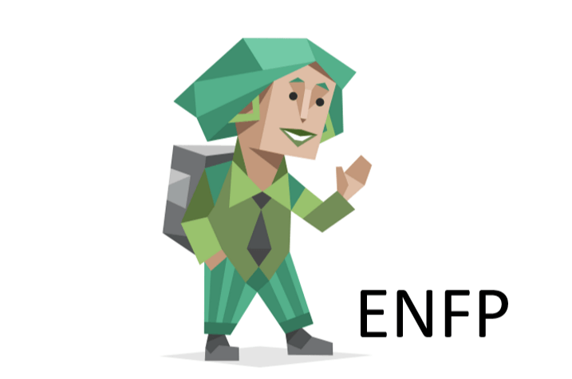

주변에서는 발랄하다고 하지만 정작 본인은 스스로를 그렇게 생각하고 있지 않다.
생각보다?? 반전인 면도 있고 타고난 외향형이지만 자라나면서 내향적으로 바뀌었다.
esfp - istp -> estp -> entp -> enfp -> intp -> enfp
중1때부터 나의 mbti 변천사이다.
요즘은 기분 좋으면 enfp 기분이 안 좋으면 intp 가 된다.
솔직히 mbti 로 내가 분류가 안되는 것 같다는 생각이 든다..
재기발랄한 활동가, 스파크형

정열적이고 활기가 넘치며 상상력이 풍부하다.
온정적이고 창의적이며, 항상 새로운 가능성을 찾고 시도하는 유형이다.
문제 해결에 재빠르고, 관심이 있는 일은 뭐든지 수행해내는 능력과 열성이 있다.
하지만 반복되는 일상적인 일은 참지 못하고 열정을 쏟지 않는다.
또한 한 가지 일을 끝내기도 전에 몇 가지 다른 일을 또 벌이는 경향을 가지고 있다.
ENFP에 대해 더 알고 싶다면
조용하고 과묵하며, 논리와 분석으로 문제를 해결하기 좋아한다.
먼저 대화를 시작하지는 않는 편이나, 관심 있는 분야에 대해서는
사실상 급발진 마냥 웬만한 인싸 이상으로 말을 많이 한다.
이해가 빠르고 직관으로 통찰하는 능력이 있으며, 지적 호기심이 많다.
모든 MBTI 유형 중 창의적 지능과 논리 면에서 가장 뛰어나며,
반대로 비과학적이거나 논리적이지 못한 일들에 거부반응을 보일 확률이 높다.
아이디어와 원리, 인과관계에 관심이 많으며
실체보다는 실체가 품고 있는 가능성에 관심이 많다.
다시 말해 지식을 아는 것과는 별개로
그에 대한 감각이나 실용적 활용에 대해선 둔감한 편이다.
MBTI 모든 유형들 중 평균 지능(IQ)이 INTJ와 함께 가장 높은데,
당연하게도 논리와 분석력은 지능에 직결되는 플러스 요인이기 때문이다.
약간의 단점이 있다면 모든 MBTI 유형들 중 평균적인 행복도가 가장 낮다.
다른 유형들과는 달리 인간관계를 아예 싫어하며,
목표도 없는 상황에서 인간관계도 전무해 즐거움을 얻지도 못하고,
똑똑함의 대가도 없이 공허함과 비관적인 성향,
그리고 엄청난 귀차니즘만이 남아 불행을 커버할 수단이 타 유형에 비해 없기 때문이다.
즉, 흔히 말하는 삶의 의미가 없다.
INTP 에 대해 더 알고 싶다면